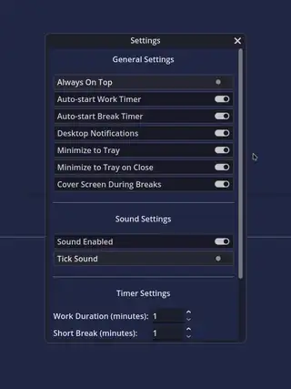

Pomodorot
إنتاجية ومهام
Pomodorot is a timer that can be used for 20-minute breaks during the workday, or as a timer for the Pomodoro Technique. If you need a timer that pauses the countdown without requiring interaction with the app, this app might be for you. Features * Variable time intervals. * Minimalistic interface.
✓ ترخيص مفتوح (GPL-3.0-or-later) · آخر تحديث: 2026-02-16
0.13.3الإصدار
35.4 MBالحجم
GPL-3.0-or-laterالرخصة
Open in Kanzتحميل APK (35.4 MB)
Download APK
SHA-256: 5b09951bae66b341f6a04efcfdedacfe54147e0117108ce0193337e789819c2e

امسح الكود لفتح صفحة التطبيق
Scan to open this app page
لو كنز مش متثبت عندك: نزّل متجر كنز.
Not installed? Get the Kanz store.